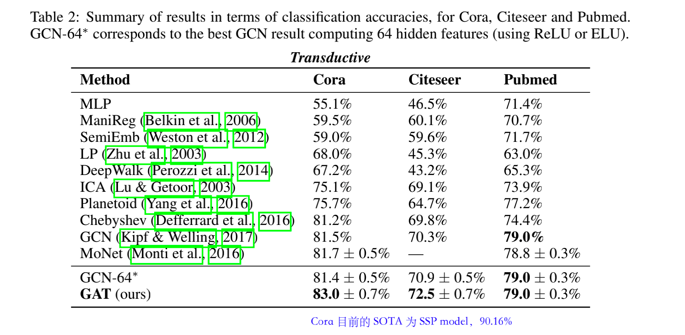

GAT
- 地址：https://arxiv.org/abs/1710.10903
- 期刊：International Conference on Learning Representations (ICLR) 2018
- 被引用次数：4116
Abstract
Graph Attention Networks(GATs) 利用 masked self-attention 为邻域中的不同节点指定不同的权重，这个操作不需要任何高成本的矩阵操作（如矩阵的逆）或取决于预先知道的图结构，解决了先前基于图卷积或其近似值的方法的缺点。
GAT：应用注意力机制将邻居顶点的特征聚合到中心顶点上（一种 aggregate 运算），注意力系数的使用，使得顶点特征之间的相关性被更好地融入到模型中。
GAT 很适用于 inductive 和 transductive 问题，在 Cora、Citeseer、Pubmed citation network datasets 和 an inductive protein-protein interaction dataset 上取得了 SOTA。
1 Introduction
图像分类、语义分割或者机器翻译等任务的数据表示具有一种类似网格的结构（grid-like structure），卷积神经网络架构能够有效地重复使用参数可学习的局部卷积核，并将它们应用于所有输入位置（局部连接、参数共享）。
对于不能用网格状的结构来表示的数据，通常表示为图结构。早期的工作有使用 RNN 来处理有向无环图的数据，图神经网络 GNNs 作为 RNN 的一种泛化，可以直接处理更普遍的图类。
💢TODO: 了解最初 GNN 的具体做法。
将卷积推广到图域，主要有两类：谱方法（spectral methods）和空间方法（spatial methods）。
谱方法：卷积操作是在傅里叶域中通过计算图拉普拉斯的特征分解来定义的，这导致潜在的密集计算和非空间定位的过滤器。针对这两个问题：（1）Henaff 等人（2015）引入了一个具有平滑系数的光谱过滤器参数化，以使过滤器在空间上得到定位。（2）Defferrard 等人（2016）提出通过图拉普拉斯的切比雪夫展开来近似滤波器，消除了计算拉普拉斯特征向量的需要，产生了空间定位的滤波器。（3）semi-GCN 通过限制过滤器在每个节点周围的 1 步邻域内运行，进一步简化了之前的方法。
利用谱方法学习到的滤波器取决于拉普拉斯特征基，而拉普拉斯特征基取决于图的结构。因此，一个在特定结构上训练的模型不能直接应用于不同结构的图。
空间方法：它直接在图上定义卷积，对空间上的近邻组进行操作。这个方法的挑战是如何定义一个能够处理不同大小的邻域（可以理解为感受野）并保持 CNN 的权重共享的算子。针对这个挑战，有如下的尝试：（1）为每个节点的度学习特定的权重矩阵；（2）使用 transition matrix 来定义领域；（3）提取和规范化包含固定数量节点的邻域；（4）混合模型 CNN（MoNet）；（5）~GraphSAGE~ 通过对每个节点的固定大小的邻域进行采样，然后对其进行特定的聚合（如所有采样邻域的特征向量的平均值）。
在许多基于序列的任务中，注意力机制几乎已经是标配。注意机制的好处之一是，它允许处理大小不一的输入，集中于输入中最相关的部分来做决定。self-attention 通常被用来计算一个单一序列的表示。
GAT 引入了一个基于注意力的架构来进行图结构数据的节点分类。基本的想法是：通过关注其邻居节点，按照 self-attention 的策略，计算图中每个节点的隐藏表征。这个 Attention 架构的优点： （1）计算高效，并行。 （2）可以通过为邻居节点指定任意的权重来适用于具有不同度的图节点。 （3）该模型可直接适用于归纳学习问题（inductive learning problems）。
GAT 在 four challenging benchmarks（ Cora, Citeseer, Pubmed citation networks, an inductive protein-protein interaction dataset）上取得了 SOTA。
2 GAT 架构
2.1 Graph Convolution Layer
以 Cora 数据集为例，h 的 shape=(2708, 1433)，即有 N=2708 个节点，每个节点有 F=1433 个特征。F’ = 64 or 7，表示经过 GATConv 后节点的特征数量。
[2708, 1433] —GATConv1—> [2708, 64] —CATConv2—> [2708, 7]。
为了获得足够的表达能力，将输入特征转化为更高层次的特征，至少需要一个可学习的线性转化。权重矩阵 W ∈ ℝ(F’ × F) 应用于每个节点。然后对节点进行 self-attention（一种共享的注意机制 a），把拼接后的高维特征映射到一个实数上，这个实数就是注意力系数： 注意力系数 e_{ij} 是一个标量，表示表示节点 𝑗 的特征对节点 𝑖 的重要性。对于一般的表示，𝑗 为图中除 𝑖 外的所有节点，这个忽略了结构信息（如邻居节点）。
本篇论文则通过 masked-attention，只计算节点 𝑗 ∈ N𝑖 的注意力系数e_{𝑖𝑗}，其中 N𝑖 是节点 𝑖 在图中的某个邻居节点。这是一种考虑了图的结构信息的注意力机制。为了使系数在不同的节点之间容易比较，使用 softmax 函数对所有 𝑗 的选择进行归一化。
(1) 式中的 𝑎 是一个单层的前馈神经网络，由权重向量 𝑎→∈ ℝ(2F’) 参数化。然后应用 LeakyReLU 非线性，(3) 式的示意图为 Figure 1 Left。

归一化的注意力系数 𝛼𝑖𝑗 被用来计算与之对应的特征的线性组合，作为每个节点的最终输出特征。 ℎ→∈ℝ(N, F’)。
为了使 self-attention 的学习过程更加稳定，将 GAT 的 masked-attention 机制扩展到采用 multi-head attention 是有益的。
PyG 实现的 GAT，第一个 GATConv 的 head=8，即 (5) 式的 K = 8。第二个 GATConv head=1。
最后一层采用平均法是更好的选择。
multi-head masked-attention 的示意图如 Figure 1 Right。三种颜色的线表示 head = 3。
3 实验评估
如下是 4 个数据集的基本信息。
我只对其中的 Cora 数据集进行介绍。Cora 在图网络中的地位可以类比于 MNIST 之于图像分类任务。
Cora Dataset (https://relational.fit.cvut.cz/dataset/CORA)
相当于图网络中的“MNIST”。
Cora：2708 个节点，5429 条边，1433 个特征，7 个类别（y）。训练数据集中有的有标签🏷，有的没有标签，Semi-Supervised Classification。
下面介绍 Transductive learning 和 Inductive Learning 的区别： Transductive：以使用 Cora 数据集为例，把节点分成 train/val/test 集。在训练时，只使用来自训练集节点的标签，但是在 forward 时，根据 GNN 的工作方式，将从邻居聚合特征向量，而邻居中有一些节点可能属于 val 或 test 集。（训练和测试都基于同样的图结构） 
GAT 模型学到的节点注意力权重非常接近均匀分布（换言之，所有的邻节点都获得了同等重视）。这在一定程度上解释了为什么在 Cora 上 GAT 的表现和 GCN 非常接近（在上面表格里我们可以看到两者的差距平均下来不到 2%）。由于没有显著区分节点，注意力并没有那么重要。
Inductive：train set、val set、test set 相互独立。不会出现邻居属于 val/test set 的情况。（用完全没见过的图进行测试）
4 总结
图注意力网络 Graph Attention Networks (GATs) 直接在图结构的数据上进行操作，采用 masked self-attention，是一种新颖的卷积神经网络。
这种注意力机制允许在处理不同大小的邻域时给邻域中的不同节点分配不同的重要性，并且不依赖于预先知道整个图结构。
未来的研究方向，可以是利用注意力机制的优势，对模型的可解释性进行彻底分析。
此外，将该方法扩展到图分类而不是节点分类，从应用的角度来看也很有意义。